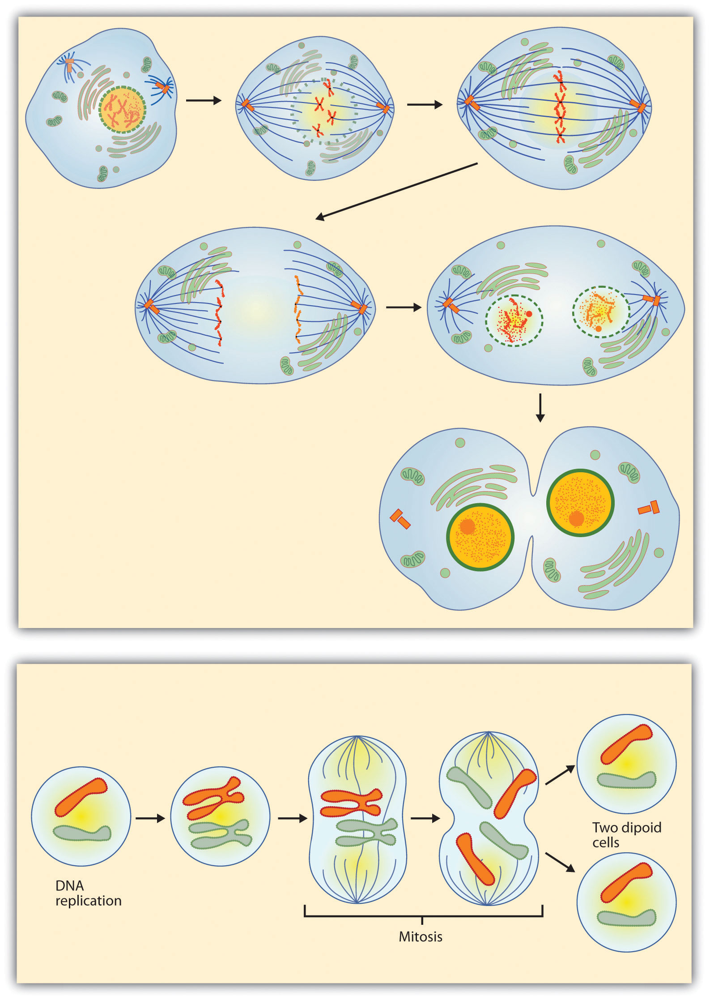
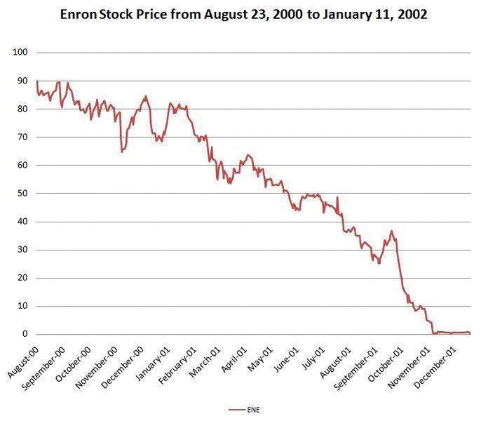
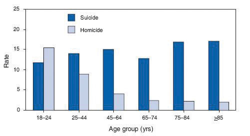
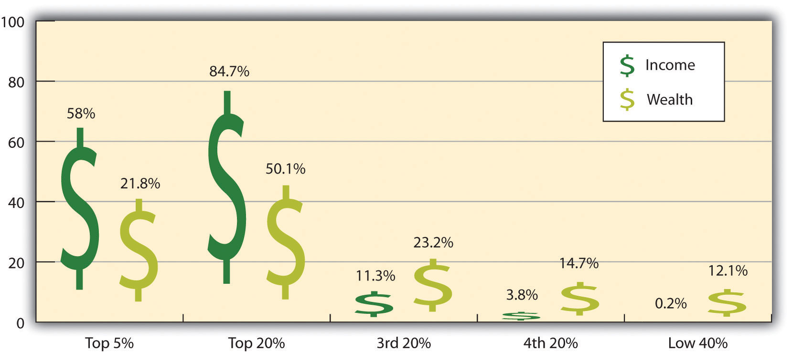
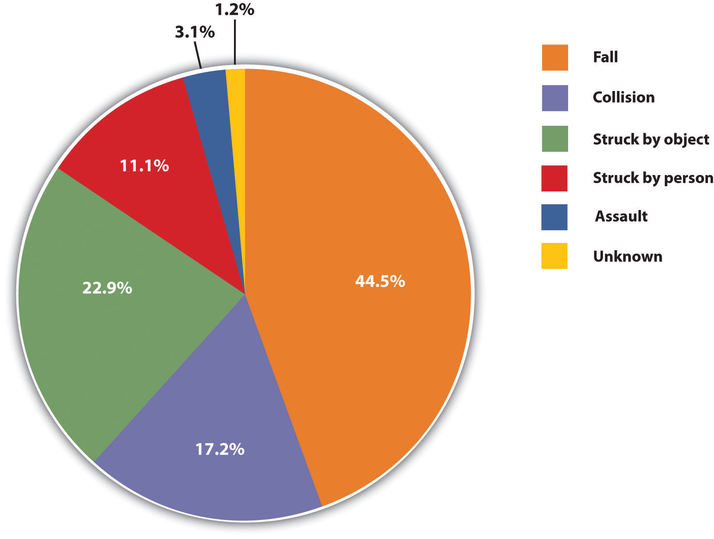
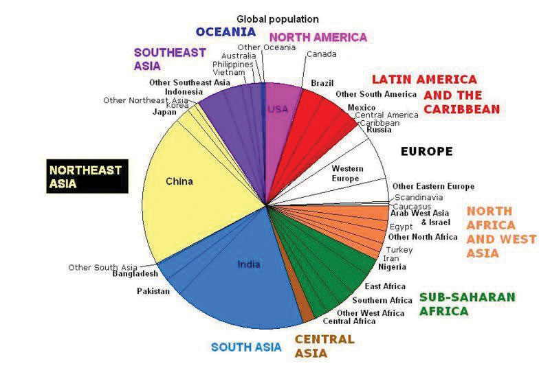
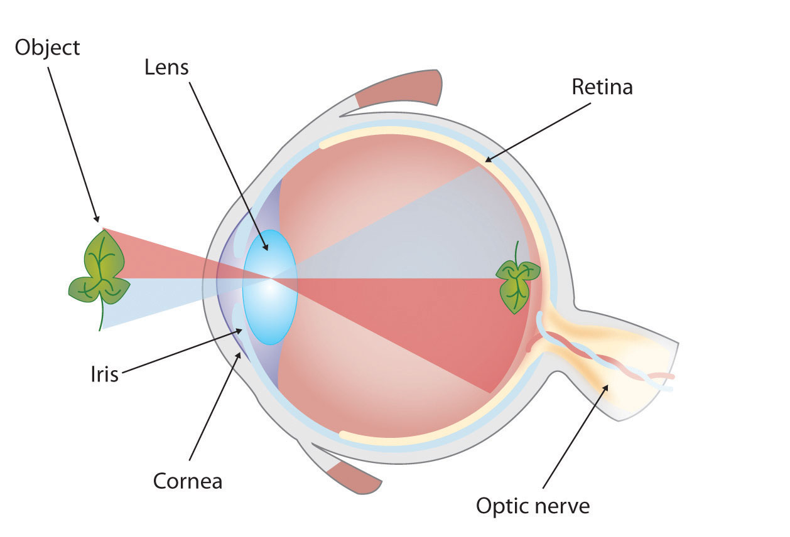
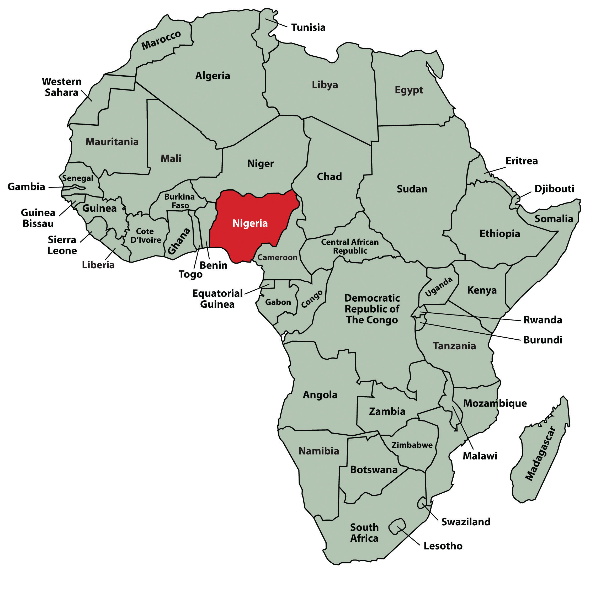

As we saw in the case of the orientation presentation at the organic farming conference, using presentation aids can be risky. However, with a little forethought and adequate practice, you can choose presentation aids that enhance your message and boost your professional appearance in front of an audience.
One principle to keep in mind is to use only as many presentation aids as necessary to present your message or to fulfill your classroom assignment. Although the maxim “less is more” may sound like a cliché, it really does apply in this instance. The number and the technical sophistication of your presentation aids should never overshadow your speech.
Another important consideration is technology. Keep your presentation aids within the limits of the working technology available to you. Whether or not your classroom technology works on the day of your speech, you will still have to present. What will you do if the computer file containing your slides is corrupted? What will you do if the easel is broken? What if you had counted on stacking your visuals on a table that disappears right when you need it? You must be prepared to adapt to an uncomfortable and scary situation. This is why we urge students to go to the classroom at least fifteen minutes ahead of time to test the equipment and ascertain the condition of things they’re planning to use. As the speaker, you are responsible for arranging the things you need to make your presentation aids work as intended. Carry a roll of duct tape so you can display your poster even if the easel is gone. Find an extra chair if your table has disappeared. Test the computer setup, and have an alternative plan prepared in case there is some glitch that prevents your computer-based presentation aids from being usable. The more sophisticated the equipment is, the more you should be prepared with an alternative, even in a “smart classroom.”
More important than the method of delivery is the audience’s ability to see and understand the presentation aid. It must deliver clear information, and it must not distract from the message. Avoid overly elaborate presentation aids because they can distract the audience’s attention from your message. Instead, simplify as much as possible, emphasizing the information you want your audience to understand.
Another thing to remember is that presentation aids do not “speak for themselves.” When you display a visual aid, you should explain what it shows, pointing out and naming the most important features. If you use an audio aid such as a musical excerpt, you need to tell your audience what to listen for. Similarly, if you use a video clip, it is up to you as the speaker to point out the characteristics in the video that support the point you are making.
Although there are many useful presentation tools, you should not attempt to use every one of these tools in a single speech. Your presentation aids should be designed to look like a coherent set. For instance, if you decide to use three slides and a poster, all four of these visual aids should make use of the same type font and basic design.
Now that we’ve explored some basic hints for preparing visual aids, let’s look at the most common types of visual aids: charts, graphs, representations, objects/models, and people.
A chartA graphical representation of data (often numerical) or a sketch representing an ordered process. is commonly defined as a graphical representation of data (often numerical) or a sketch representing an ordered process. Whether you create your charts or do research to find charts that already exist, it is important for them to exactly match the specific purpose in your speech. Figure 15.6 "Acupuncture Charts" shows two charts related to acupuncture. Although both charts are good, they are not equal. One chart might be useful in a speech about the history and development of acupuncture, while the other chart would be more useful for showing the locations of meridians, or the lines along which energy is thought to flow, and the acupuncture points.
In the rest of this section, we’re going to explore three common types of charts: statistical charts, sequence-of-steps chart, and decision trees.
Figure 15.7 Birth Weight Chi-Square

Source: Woods, S. E., & Raju, U. (2001). Maternal smoking and the risk of congenital birth defects: A cohort study. Journal of the American Board of Family Practitioners, 14, 330–334.
For most audiences, statistical presentations must be kept as simple as possible, and they must be explained. The statistical chart shown in Figure 15.7 "Birth Weight Chi-Square" is from a study examining the effects of maternal smoking on a range of congenital birth defects. Unless you are familiar with statistics, this chart may be very confusing. When visually displaying information from a quantitative study, you need to make sure that you understand the material and can successfully and simply explain how one should interpret the data. If you are unsure about the data yourself, then you should probably not use this type of information. This is surely an example of a visual aid that, although it delivers a limited kind of information, does not speak for itself.
Figure 15.8 Steps in Cell Reproduction
Source: Images courtesy of LadyofHats, http://commons.wikimedia.org/wiki/File:MITOSIS_cells_secuence.svg, and the National Institutes of Health, http://commons.wikimedia.org/wiki/File:MajorEventsInMitosis.jpg.
Charts are also useful when you are trying to explain a process that involves several steps. The two visual aids in Figure 15.8 "Steps in Cell Reproduction" both depict the process of cell division called mitosis using a sequence-of-steps chart, but they each deliver different information. The first chart lacks labels to indicate the different phases of cell division. Although the first chart may have more color and look more polished, the missing information may confuse your audience. In the second chart, each phase is labeled with a brief explanation of what is happening, which can help your audience understand the process.
Figure 15.9 To Play or Not to Play

Source: Image courtesy of T-kita, http://commons.wikimedia.org/wiki/File:Decision_tree_model.png.
Decision trees are useful for showing the relationships between ideas. The example in Figure 15.9 "To Play or Not to Play" shows how a decision tree could be used to determine the appropriate weather for playing baseball. As with the other types of charts, you want to be sure that the information in the chart is relevant to the purpose of your speech and that each question and decision is clearly labeled.
Strictly speaking, a graph may be considered a type of chart, but graphs are so widely used that we will discuss them separately. A graphA pictorial representation of the relationships of quantitative data using dots, lines, bars, pie slices, and the like. is a pictorial representation of the relationships of quantitative data using dots, lines, bars, pie slices, and the like. Graphs show the variation in one variable in comparison with that of one or more other variables. Where a statistical chart may report the mean ages of individuals entering college, a graph would show how the mean age changes over time. A statistical chart may report the amount of computers sold in the United States, while a graph will show the breakdown of those computers by operating systems such as Windows, Macintosh, and Linux. Public speakers can show graphs using a range of different formats. Some of those formats are specialized for various professional fields. Very complex graphs often contain too much information that is not related to the purpose of a student’s speech. If the graph is cluttered, it becomes difficult to comprehend.
In this section, we’re going to analyze the common graphs speakers utilize in their speeches: line graphs, bar graphs, and pie graphs.
Figure 15.10 Enron’s Stock Price
Source: Image courtesy of Nehrams 2020, http://commons.wikimedia.org/wiki/File:EnronStockPriceAug00Jan02.jpg.
A line graph is designed to show trends over time. In Figure 15.10 "Enron’s Stock Price", we see a line graph depicting the fall of Enron’s stock price from August 2000 to January 2002. Notice that although it has some steep rises, the line has an overall downward trend clearly depicting the plummeting of Enron’s stock price. Showing such a line graph helps the audience see the relationships between the numbers, and audiences can understand the information by seeing the graph much more easily than they could if the speaker just read the numbers aloud.
Bar graphs are useful for showing the differences between quantities. They can be used for population demographics, fuel costs, math ability in different grades, and many other kinds of data.
The graph in Figure 15.11 "Natural Death vs. Homicide" is well designed. It is relatively simple and is carefully labeled, making it easy for you to guide your audience through the quantities of each type of death. The bar graph is designed to show the difference between natural deaths and homicides across various age groups. When you look at the data, the first grouping clearly shows that eighteen- to twenty-four-year-olds are more likely to die because of a homicide than any of the other age groups.
Figure 15.11 Natural Death vs. Homicide
Source: Image courtesy of Centers for Disease Control and Prevention, http://commons.wikimedia.org/wiki/File:Homicide_suicide_USA.gif.
The graph in Figure 15.12 "Distribution of Income and Wealth in the United States" is a complicated bar graph depicting the disparity between the haves and the have nots within the United States. On the left hand side of the graph you can see that the Top 20% of people within the United States account for 84.7% of all of the wealth and 50.1% of all of the income. On the other hand, those in the bottom 40% account for only 0.2% of the wealth and 12.1% of the actual income.
Figure 15.12 Distribution of Income and Wealth in the United States
Source: Wolff, E. N. (2007). Recent trends in household wealth in the United States: Rising debt and the middle-class squeeze (Working Paper No. 502). Retrieved from the Levy Economics Institute of Bard College website: http://www.levy.org/pubs/wp_502.pdf
While the graph is very well designed, it presents a great deal of information. In a written publication, readers will have time to sit and analyze the graph, but in a speaking situation, audience members need to be able to understand the information in a graph very quickly. For that reason, this graph is probably not as effective for speeches as the one in Figure 15.11 "Natural Death vs. Homicide".
Pie graphs should be simplified as much as possible without eliminating important information. As with other graphs, the sections of the pie need to be plotted proportionally. In the pie graph shown in Figure 15.13 "Causes of Concussions in Children", we see a clear and proportional chart that has been color-coded. Color-coding is useful when it’s difficult to fit the explanations in the actual sections of the graph; in that case, you need to include a legend, or key, to indicate what the colors in the graph mean. In this graph, audience members can see very quickly that falls are the primary reason children receive concussions.
Figure 15.13 Causes of Concussions in Children
Figure 15.14 World Populations
Source: Image courtesy of Brutannica, http://commons.wikimedia.org/wiki/File:World_population_pie_chart.JPG.
The pie graph in Figure 15.14 "World Populations" is jumbled, illegible, confusing, and overwhelming in every way. The use of color coding doesn’t help. Overall, this graph simply contains too much information and is more likely to confuse an audience than help them understand something.
In the world of presentation aids, representationsA presentation aid designed to represent a real process or object. is the word used to classify a group of aids designed to represent real processes or objects. Often, speakers want to visually demonstrate something that they cannot physically bring with them to the speech. Maybe you’re giving a speech on the human brain, and you just don’t have access to a cadaver’s brain. Instead of bringing in a real brain, you could use a picture of a brain or an image that represents the human brain. In this section we’re going to explore four common representations: diagrams, maps, photographs, and video or recordings.
DiagramsDrawing that outlines and explains the parts of an object, process, or phenomenon that cannot be readily seen. are drawings or sketches that outline and explain the parts of an object, process, or phenomenon that cannot be readily seen. Like graphs, diagrams can be considered a type of chart, as in the case of organization charts and process flow charts.
Figure 15.15 The Human Eye
When you use a diagram, be sure to explain each part of the phenomenon, paying special attention to elements that are complicated or prone to misunderstanding. In the example shown in Figure 15.15 "The Human Eye", you might wish to highlight that the light stimulus is reversed when it is processed through the brain or that the optic nerve is not a single stalk as many people think.
Maps are extremely useful if the information is clear and limited. There are all kinds of maps, including population, weather, ocean current, political, and economic maps, but you should be able to find the right kind for the purpose of your speech. Choose a map that emphasizes the information you need to deliver.
The map shown in Figure 15.16 "African Map with Nigerian Emphasis" is simple, showing clearly the geographic location of Nigeria. This can be extremely valuable for some audiences who might not be able to name and locate countries on the continent of Africa.
Figure 15.16 African Map with Nigerian Emphasis
Figure 15.17 Rhode Island Map
Source: Map courtesy of the National Atlas of the United States.
Figure 15.17 "Rhode Island Map" is a map of the state of Rhode Island, and it emphasizes the complicated configuration of islands and waterways that characterize this state’s geography. Although the map does not list the names of the islands, it is helpful in orienting the audience to the direction and distance of the islands to other geographic features, such as the city of Providence and the Atlantic Ocean.
Figure 15.19 Ship’s Rigging
Source: Image courtesy of Mathieu Dréo, http://commons.wikimedia.org/wiki/File:Tall_ship_rigging_in_amsterdam_close.jpg.
Sometimes a photograph or a drawing is the best way to show an unfamiliar but important detail. Figure 15.18 "Wigwam Picture" is a photograph of a wigwam, a wigwam was a living dwelling used by Native Americans in the North East. In this photograph you can see the curved birchbark exterior, which makes this dwelling ideal for a variety of weather conditions. The photograph of the tall ship in Figure 15.19 "Ship’s Rigging" emphasizes the sheer amount and complexity of the ship’s rigging.
Another very useful type of presentation aid is a video or audio recording. Whether it is a short video from a website such as YouTube or Vimeo, a segment from a song, or a piece of a podcast, a well-chosen video or audio recording may be a good choice to enhance your speech.
Imagine, for example, that you’re giving a speech on how “Lap-Band” surgeries help people lose weight. One of the sections of your speech could explain how the Lap-Band works, so you could easily show the following forty-three-second video to demonstrate the medical part of the surgery (http://www.youtube.com/watch?v=KPuThbFMxGg). Maybe you want to include a recording of a real patient explaining why he or she decided to get the Lap-Band. Then you could include a podcast like this one from the Medical University of South Carolina (http://medicaluniversc.http.internapcdn.net/medicaluniversc_vitalstream_com/podcasts/2007/1_Treado_June_22_final.mp3).
There is one major caveat to using audio and video clips during a speech: do not forget that they are supposed to be aids to your speech, not the speech itself! In addition, be sure to avoid these three mistakes that speakers often make when using audio and video clips:
Objects and models are another form of presentation aid that can be very helpful in getting your audience to understand your message. ObjectsA tangible, physical item a speaker could hold up and talk about during a speech. refer to anything you could hold up and talk about during your speech. If you’re talking about the importance of not using plastic water bottles, you might hold up a plastic water bottle and a stainless steel water bottle as examples. If you’re talking about the percussion family of musical instruments and you own (and can play) several different percussion instruments, you can show your audience in person what they look like and how they sound.
ModelsA three-dimensional re-creation of a physical object., on the other hand, are re-creations of physical objects that you cannot have readily available with you during a speech. If you’re giving a speech on heart murmurs, you may be able to show how heart murmurs work by holding up a model of the human heart.
The next category of presentation aids are people and animals. We can often use ourselves or other people to adequately demonstrate an idea during our speeches.
When giving a speech on a topic relating to animals, it is often tempting to bring an animal to serve as your presentation aid. While this can sometimes add a very engaging dimension to the speech, it carries some serious risks that you need to consider.
The first risk is that animal behavior tends to be unpredictable. You may think this won’t be a problem if your presentation aid animal is a small enough to be kept confined throughout your speech—for example, a goldfish in a bowl or a lizard or bird in a cage. However, even caged animals can be very distracting to your audience if they run about, chirp, or exhibit other agitated behavior. The chances are great that an animal will react to the stress of an unfamiliar situation by displaying behavior that does not contribute positively to your speech.
The second risk is that some audience members may respond negatively to a live animal. In addition to common fears and aversions to animals like snakes, spiders, and mice, many people have allergies to various animals.
The third risk is that some locations may have regulations about bringing animals onto the premises. If animals are allowed, the person bringing the animal may be required to bring a veterinary certificate or may be legally responsible for any damage caused by the animal.
For these reasons, before you decide to use an animal as a presentation aid, ask yourself if you could make your point equally well with a picture, model, diagram, or other representation of the animal in question.
Speakers can often use their own bodies to demonstrate facets of a speech. If your speech is about ballroom dancing or ballet, you might use your body to demonstrate the basic moves in the cha-cha or the five basic ballet positions.
In many speeches, it can be cumbersome and distracting for the speaker to use her or his own body to illustrate a point. In such cases, the best solution is to ask someone else to serve as your presentation aid.
You should arrange ahead of time for a person (or persons) to be an effective aid—do not assume that an audience member will volunteer on the spot. If you plan to demonstrate how to immobilize a broken bone, your volunteer must know ahead of time that you will touch him or her as much as necessary to splint their foot. You must also make certain that they will arrive dressed presentably and that they will not draw attention away from your message through their appearance or behavior.
The transaction between you and your human presentation aid must be appropriate, especially if you are going to demonstrate something like a dance step. Use your absolute best judgment about behavior, and make sure that your human presentation aid understands this dimension of the task.